MarvinSpace is a Java-based 3-dimensional molecular structure visualization
program. Its main purpose is to display macromolecules including
proteins, nucleic acids, and protein-ligand complexes. MarvinSpace
is an interactive program, which means that it does not merely display a
static image but it allows the user to manipulate the structure: look at it from
different aspects, various distances, look inside etc.
MarvinSpace can also be used to display and manipulate small molecules,
particularly if high quality rendering is required.
MarvinSpace is built on OpenGL, the industry standard 3D visualization language to render high quality molecular scenes. Beside high image quality, OpenGL also provides efficiency that allows real-time manipulation of molecular structures. OpenGL supports hardware acceleration, that is, it can fully exploit the capabilities of the particular graphics card being used.
The canvas (or scene) is the image area that displays the molecular structures in 3D. This is also an area that accepts mouse input events, like mouse motion and mouse button clicks. These events are processed by the canvas and it reacts to them in a predefined manner (though the default behaviour can be changed easily).
| Event | Action | Description |
|---|---|---|
| Mouse movement + Left button | Rotate | Rotates the content of the scene (or the current cell in multiple cell view mode) about the two axes in the plane of the screen. If, however, mouse is moved outside the rotation sphere the scene is rotated around the third axis that is perpendicular to the screen. |
| Mouse movement + Left button + Shift key or Mouse movement + Right button | Move | Moves the scene left-right and up-down. |
| Mouse movement + Middle button | Zoom | Move the scene closer to or further from the viewer, depending on the direction of mouse motion. |
| Mouse wheel | Clipping | Gradually removes parts of the structures that are near to the viewer's eyes. |
| Middle button click | Center | Defines origin of the scene. The new origin (look at point) is the point where the mouse pointer was pointing at the click event. |
The main menu bar is located at the top of the MarvinSpace window. It consists of seven submenus: File, Edit, Display, Show, Animation Layout and Help.
The main function provided in the File submenu is
loading molecular structure files. These can
either be small molecules or a macromolecules (that is, proteins, protein-ligand
complexes, RNA, DNA etc).
The structure opened is displayed in the current cell
(marked by a thin red frame) and
is registered in the selection panel on the right
hand side of the MarvinSpace window.
There are two alternative ways to load new structures in MarvinSpace.
Open removes all existing objects (after confirmation)
and loads new structures in either one or more cells depending on user selection.
In contrast to this, Add keeps all previously loaded
structures and adds new ones to the current cell.
Open from RCSB PDB connects http://www.rcsb.org to load a pdb file given by its identifier.
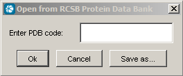Open property file is to map volumetric data on molecular surfaces. Currently supported property file formats are Gaussian Cube (*.cube) and Charmm (*.phi80).
Save screen saves the canvas as a PNG, BMP or JPG file. It does full screen anti-aliasing before image saving. The size of the image will be the same as the size of the canvas.
Export image saves the canvas in arbitrary size in the above formats. There is a limitation: export image does not work properly if:
Exit leaves the program.
Selected molecules can be copied or cut, and molecules can be pasted with the Copy, Cut and Paste menus.
The Open MarvinSketch menu enables molecule constructing on the fly, for changes made in the Sketcher are reflected immediately to MarvinSpace. Selected ligands will instantly appear for editing in the opening MarvinSketch window.
Submenus and options in the display menu allow to change the drawing
style, the coloring scheme and further properties of components
displayed. Classes of components can have different settings, for instance the atom
colors of proteins and that of ligands can be set independently.
However, there are global parameters too, like the fog effect and anti-aliasing, that affect all
visible components.
Display settings are applied to all visible components of the corresponding category, that is, if the draw type of ligands is changed to spacefill, then all ligands are drawn this way, that is, with large atom spheres.
Component type specific visualization mode can be selected in this submenu. Eight further submenus are available: Ligand, MacroMolecule, Water, Ion, Pharmacophore point, Pharmacophore arrow, Surface and Secondary structure. Note, that MacroMolecule refers to proteins and nucleic acid polymers too. Also note, that not all visualization modes are available for all kinds of components.
| Ligand Draw Type | Description |
|---|---|
| Wire | Draws bonds only as thin lines. The wire mode is the
fastest, use it for very large structures or when graphic
hardware exhibits poor performance. |
| Ball | Only atoms are displayed as small spheres. |
| Stick | Only bonds are displayed as sticks (ie. cylinders) with smooth caps and joints. |
| Ball and wire | The combination of the Ball and the Wire modes. |
| Ball and stick | The combination of the Ball and the Stick modes. This gives very nice representation of the molecular structure, though in the case of large structures (that is, over 15000 atoms) the graphic performance drops sharply on non-hardware accelerated graphics cards. Good cards can easily cope with very large structures that contain over 50000 atoms. |
| Spacefill | This mode represents atoms only, each with a sphere. The size of the sphere is equal to the van der Waals radius of the corresponding atom. Van der Waals radii are built in and cannot yet be modified by the user. |
| Hydrogens | An option, independent from all above draw type (that is, it can
be combined with all draw types available. When box is checked,
hydrogen atoms as well as bonds connecting heavy atoms and hydrogens
are drawn, too. Note, that MarvinSpace 1.3 is not capable of generating hydrogens not described in input files in the case of macromolecules. However, small molecules (excluding ligands in complexes) are automatically "hydrogenized". |
Note, that Ligand draw type is applied to all small molecules, not only to ligands of protein-ligand complexes.
The next submenu, MacroMolecule, offers the same modes as ligand drawing.
The next submenu, Water allows to specify the representation of water molecules defined in PDB files. The same modes are available as in case of ligand drawing.
Ion sets the display mode of ions defined in PDB files, the same options are available as for water molecules plus dotted mode, though the default draw type is Spacefill.
The Pharmacophore point and Pharmacophore arrow submenus offers the display modes Solid, Wire and Transparent. Dotted mode is available in Pharmacophore point menu only. Read more about Pharmacophore representation here.
In the Surface submenu four draw types are available: Dot, Mesh, Solid and Transparent.
The next submenu is Secondary structure.
Trace is a connection of C alpha atoms with cylinders.
Tube is a smooth cylindrical tube representation of the C alpha atoms.
Pipe and Plank means the displaying of helices as cylinders, the sheets as boxes, and the others as tube.
The followings are slightly different versions of the standard secondary structure representation.
Ribbon lines is drawing as several "parallel", or offset curves,
Ribbon is a flat, polygonal representation,
Cartoon square is like a thick ribbon,
Cartoon is the common cartoon representation of secondary structures.
The last submenu in Draw type is Label.
There are two types of labels available:
Labels can be drawn in plane, so that they won't be affected by depth cueing and clipping, their size will not change by zooming, and they will not be obscured by objects in the space.
Labels can also be rendered in 3D in exact depth.
The size of the labels can be chosen as Small, Medium or Large.
Border and Background drawing of labels can be enabled or disabled.
| Ligand | Description |
|---|---|
| Constant | Depending on draw type atoms and bonds or all are painted the same color which by default is gold. |
| CPK | Atoms are colored according to the CPK
coloring schema in which the atom color depends on the
atom type. If bonds are also displayed then these are colored as the two atoms that they connect. Note, that the colors of the most frequent atoms can be changed in the Options dialog. |
| MacroMolecule | Description |
|---|---|
| Constant | Depending on draw type atoms and bonds or all are painted gray. |
| CPK | Atoms are colored according to the CPK
coloring schema in which the atom color depends on the
atom type. Bonds displayed are colored by the colors of the two atoms that they connect. Note, that the colors of the most frequent atoms can be changed in the Options dialog. |
| Residue | Atoms and bonds are colored according to the residue (amino acid
or nucleic acid) type. Note, that the colors schema can be changed in the Options dialog. |
| Chain | Atoms and bonds that are in the same chain (in a protein or in a nucleic acid) are colored the same, while different chains are colored by different colors. |
| Secondary structure | Atoms and bonds are colored according to the secondary structure type. |
| Rainbow | That is coloring by the increasing index of the carbon alpha atoms. |
| B-factor | Means coloring by the temperature factor, where colors are coming from a blue to yellow color palette. |
Water molecules and Ions can be colored by constant or by CPK colors.
In case of surfaces the types introduced for macromolecules are available, and an eighth option can also be selected: Electrostatic potential that calculates electrostatic potential value for surface points and colors the surface according to the current value at a given surface point. By default negative potential is colored by blue while positive potential values are represented by red. The intensity of colors varies according to the absolute value of the electrostatic potential. The color palette can be changed for example to rainbow and blue to green colors. The coloring can dynamically be adjusted independently for negative and for positive values.
The Secondary Structures can be colored as MacroMolecules except the CPK coloring.
Three display qualities are provided by MarvinSpace: High, Medium and Low. Apparently, High gives the nicest and smoothest representation, while Low enables the highest performance, thus this is the most suitable for slow graphic cards. The rendering quality is primarily determined by the number of triangles constituting atom sphere and bond cylinders for structure display. In the case of surfaces the resolution of a discrete grid in which the surface is approximated correlates with the rendering quality. The corresponding parameters are wired in and cannot be changed by the user. Future version of MarvinSpace will provide a dialog in the GUI to let the user tweak these parameters according to needs and the performance of the graphic card.
Rendering quality autoscaling mechanism is also implemented, though in MarvinSpace 1.3 this is still experimental. Autoscaling decreases the current display quality with respect to the actual performance of the graphics hardware (expressed as frame rate). For instance anti-aliasing is automatically turned off when a molecular scene is manipulated (rotated, translated, zoomed).
Depth cue is often referred to as the fog effect. When this option is selected the molecular scene is drawn as if it was placed in a foggy atmosphere which results in displaying distant parts of the molecules with faded, blurred colors while near parts are brighter with sharper edges. This gives a good impression of depth that allows better recognize the 3D structure.
Anti-aliasing smooths all objects displayed that results in smoother edges,
less ragged lines, more realistic intersections. However, this function
is very costly and the quality highly depends on the graphic hardware.
Note, that anti-aliased scene cannot be manipulated (rotated, zoomed etc)
therefore a built in mechanism called quality auto scaling, unique to MarvinSpace,
automatically turns off anti-aliasing for moving images and turned it back when
image is standing still.
This menu item pops up a dialog window to set various rendering parameters. These are as follows.
Visualizers tab that applies to Ligands, MacroMolecules, Water and Ions:| Parameter | Description |
|---|---|
| Ball radius | Size of atom spheres in Ball draw type, measured in Angstroms. |
| Bond radius | Size of bond cylinders in Ball and Stick draw type, measured in Angstroms. |
| Stick radius | Size of bond cylinders in Stick draw type, measured in Angstroms. |
| Line width | Width of bonds in wire mode. |
| Double bond distance | Gap between two lines/sticks representing a double bond. It is determined as a percentage of Bond radius. |
| Double bond width | Thickness of line/stick representing a double bond. It is expressed relative to the thickness of a single bond. |
| Display bond order | When checked double bonds are drawn by two line segments,
otherwise all bonds are represented as single bonds. Future releases will introduce drawing mode for triple and aromatic bonds too. |
| vdW scaled balls | When checked atom spheres in Ball and Ball-and-Stick modes are scaled according to their van der Waals radii. Otherwise all atoms (apart from hydrogen) are represented by uniform sphere radii. Hydrogen radius is half of atom radius. |
| Smooth colored sticks | When checked bi-colored stick bonds are colored gradually from one color to the other (in CPK atom coloring mode). Otherwise the two halves are draw with the two different colors. |
| Parameter | Description |
|---|---|
| Probe radius | Radius of probe atom representing solvent when constructing the Connolly and the solvent accessible surfaces. Measured in Angstroms. |
| Automatic surface resolution | Size of grid cells in surface calculations will be set automatically according to the number of atoms. |
| Manual surface resolution | Size of grid cells in surface calculations can be given, measured in Angstroms. The smaller the value, the finer the surface and the longer the surface calculation takes. Also, finer resolution grids require significantly more working memory. |
| Surface triangle count reduction | When checked, the number triangles constituting a molecular surface are reduced without effecting the smoothness of the surface. This step is performed after the surface is calculated and it takes some time particularly for larger surfaces. However, it is worth spending some extra time for triangle reduction because the resulting surface can be displayed and manipulated much faster than the original surface. |
Various settings of the secondary structure representation.
Colors tab:Change default colors here. Note, that in MarvinSpace 1.3 chain colors
are wired in and cannot be changed by the user.
The following colors can be changed:
This allows the user to customize how MarvinSpace reacts to various input events (like mouse motion, clicking etc). Note, that not all, but most of the important actions can be customized.
| Parameter | Description |
|---|---|
| Default style | With this user can select MarvinSpace style association of input events with actions. |
| Custom style | User can select which mouse event will perform rotation, zooming, translation and will pop up the menu. |
| Invert zoom | Swaps between zooming policies. By default zoom in is associated to moving mouse away from us (thus towards the scene), while zooming out is done in the opposite direction. However, when this option box is checked the zooming directions swap. |
| Animated rotation | When checked, rotation will not stop when mouse movement stops but continues for a while depending on the acceleration/deceleration of the mouse while it was moving. This results in an inertia effect. Useless, but nice! |
Managing license keys.
In MarvinSpace any visible element can be labeled. Though from the gui only named components can be labeled such as atoms, residues, molecules and secondary structures. The labels can be colored to enhance visibility.
Labels on selection is an other way of displaying labels on a visible element by selection.
In case of selecting atoms, if this box is checked the residue atom
label of the selected atoms are displayed next to the atom. The residue atom
label consists of the residue name (3 letter abbreviation in the case of amino
acids, or 1 letter code in the case of nucleic acids), the residue sequence number,
the chain identifier and the atom label.
There are four types of molecular surfaces available in MarvinSpace: Connolly, van der Waals, solvent accessible and blobby. Blobby molecule is yet experimental.
Secondary structure represents the secondary structure of protein components by a schematic diagram.
A simple built-in animation can be played by the Play Demo menu. Continous rotation is also available by selecting Idle Rotation.
The MarvinSpace canvas can be subdivided into rectangular areas called cells. Each cell can contain arbitrary number of structures. Each cell is fully functional, that is, the same actions can be performed per cell as for an undivided canvas.
| Parameter | Description |
|---|---|
| Add row | Inserts a new row of cells below the last row. The new row contains as many cells as many columns are displayed. |
| Add column | Inserts a new column of cells after the last column. The new column contains as many cells as many rows are already displayed. |
| Delete row | Removes the last (bottom) row (that is, all cells in the last row) and the content of cells. |
| Delete column | Removes the last (right hand site) column along with all of its cells and the content of cells. |
| Reset view in all cells | Reverts view angle and zoom position in all cells. |
| Synchronous mode | When checked, all motion events are delivered to all cells. This means that rotating the content of the cell under the mouse pointer affects all other cells as if the mouse was moved the same way in those cells too. |
The Popup menu appears when you right-click over
the canvas. Functions available in this menu will significantly change in
future releases.
In version 1.3 the Popup menu looks like as on the image.
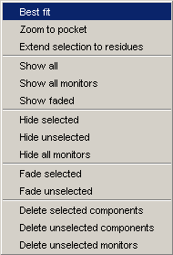
The Toolbar is located under the Main menu bar and it consists of small
icon buttons. These allow to access functions not available in menus. (Note,
that future releases of MarvinSpace will make all functions available from
dedicated submenus too, and the Toolbar will be user configurable.)
There are various classes of functions available as tools, such as monitors, controls,
pharmacophores and other display tools.
These tools enable to measure geometric properties of molecules in an interactive fashion. Distances (bond lengths or any interatomic distances), bond angles and dihedral angles can be measured. Results are displayed in monitors that are small labels on the canvas linked to the structure. When the structure is rotated these monitors move along, and when the structures are manipulated by controls monitors are refreshed automatically to reflect any changes in the geometry of the structures instantly.
Monitors are easy to use: select the type of monitor appropriate for the property to be measured (ie. distance, bond angle, dihedral angle), then select the appropriate number of atoms one by one (single click with left mouse button). When the last atom (ie. second, third or fourth depending on the type of monitor) is selected the monitor appears on the canvas.
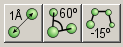Monitors themselves can be selected by single click of left mouse button just like any other component visible on the canvas. When selected, they can be deleted (ie. removed forever), and they can also be hidden (ie. removed from the canvas temporarily). Hidden monitors can be shown again, use the right mouse button popup menu.
Controls are tools that can manipulate the internal and absolute coordinates or other geometrical properties of the selected objects. Three controls are available: translate, rotate and resize. The latter, resize, can be applied to elements of pharmacophore models or to surfaces.
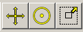
The translate control moves the selected object and changes its coordinates, thus the relative position of two (or more) objects (e.g.. two ligands in the same binding pocket) can be modified. To translate a molecule follow the steps below:
Note, however, that this way the selected object can be translated in the
plane of the screen only. In order to move it in other directions, that is, along
the third axis towards the viewer's eyes or away from them, the Shift
key has to be pressed too.
Note that rotation and translation of the scene is always possible, regardless of
which monitor or control is being applied.
The next control button is the rotation control. With this the selected
structure can be rotated without affecting any other object. For instance a ligand in a proteins binding
pocket can be rotated while the protein
remains in its original position. To rotate the selected object follow the steps
of translation described above, except that in the 4th step press the rotate
control button instead of the translate button: 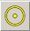
Note, that the Ctrl (control) key on the keyboard has to be held down to
rotate the selected object, otherwise the scene is rotated (thus no coordinates,
relative positions of objects changes).
If both Ctrl (control) and
Shift keys are pressed, the object rotates about
the axis perpendicular to the plane of the canvas.
The resize control can be applied to increase/decrease the size of spheres
and arrows used in pharmacophore model building.
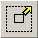
This works similar to translation and rotation, though in this case the
object to be selected is either a pharmacophore sphere or an arrow. Again, the
Ctrl (control) key has to pressed to resize the
selected object.
Resize also has effect on surfaces. In this case the bounding box of a selected surface
can be resized, and thus the surface will be clipped by 6 clipping planes determined
by the sides of the bounding box.
MarvinSpace offers a simple tool to represent pharmacophore models: spheres and arrows can be placed at any position. These can be translated, rotated and resized using controls.
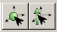To place a pharmacophore sphere to represents a pharmacophore point follow the steps below:
Arrows can be placed the same way except that the arrow button has to be pressed to initiate the process.
Display tools enhance the visualization capabilities of MarvinSpace. With these
the user can have better understanding of the structures studied.
The Depth cue (or Fog) tool enhances the sensation
of space (depth) by fading distant objects. The fog can gradually be adjusted
by the Depth cue slider.
The Clipping slider is a composite slider. It moves two planes parallel with the canvas towards or away from the visible objects. One of the planes (the near plane) cuts these object so that parts in front of the plane will not be visible. The other plane (the far plane) cuts parts that are behind the plane. This helps better understand the structure being analyzed by allowing deeper insight into buried parts by hiding obscuring details.
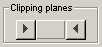The Isosurface slider is yet an experimental slider. Its aim is to easily change the threshold value of isosurfaces. Isosurfaces in MarvinSpace 1.3 appear only when Gaussian Cube files are imported. In this case an isosurface is automatically generated, and it can be changed interactively (depends on the size of the volume and the computer capacity) by changing the threshold value with the slider.
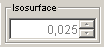Finally, the tool for dynamic surface coloring
is more complex. In the present
release it can be used in combination with surfaces colored by electrostatic
potential.
By moving the sliders the areas of the surface where the negative/positive
potential is below/above the threshold values set by the slider are not colored
(i.e.. colored by the default color).
The leftmost and rightmost edit boxes display the minimum/maximum potential
values calculated on the surface, while the two inner values correspond to
the actual positions of the slider in the [minimum, 0] and the [0, maximum] ranges, respectively.
By clicking on the colored image above the sliders, the palette can be changed
by selecting a palette from a list on an appearing dialog.
With this dynamic coloring modelers can better focus on areas where the
absolute value of the potential is above a certain threshold thus where
the chance for an electrostatic interaction is more likely.
Components in MarvinSpace are registered in the selection panel in hierarchical way.
Macromolecules may consist of Chains, Ligands, Ions and Water. Computed molecular surfaces
and the secondary structure are also displayed under the related macromolecule.
Components being in an inactive cell will appear faded and selecting them will cause the
activation of the containing cell.
Every component has a symbolic image on the selection panel that is a rectangle
with a specific color. The color helps identifying the structures.
For example when macromolecule chains are colored by chain type the related symbolic images will
have the same color as the chain. By clicking on a symbolic image a component can
be shown/hidden quickly and the image changes the visibility state of the components.
| 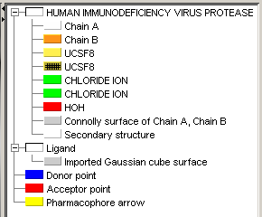 | 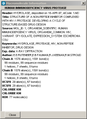 |
The selection panel has its own Popup Menu that contains submenus and menu items according to the selected component. Components can be selected/deselected, shown/hidden, closed and have their display properties changed independently. There are some actions that are not available from the Menubar, because they are connected to specific components.
These are as follows:Information of MacroMolecules displays variuos information found in pdb files.
Selecting the neighborhood of a ligand causes the selection of all components or parts of components (atoms) lying in a customizable size environment of the specified ligand. This is useful when dealing with large macromolecules because the display can be greatly reduced to the interesting part of the molecule by choosing Hide unselected components in the main Popup menu.
Extending selection of a chain will cause the selection of every atoms of every residue that have at least one atom already selected. Hidden atoms will also be selected and become visible.
Reduce triangle count will take effect on a specific surface. Each time this is invoked the number of triangles will be reduced. Note, that invoking it many times will totally deform the surface.
Significant drawing of a surface is used when the surface is colored by electrostatic potential. In this case surface triangles where the potential is between the two threshold value will not be drawn.
Copyright © 1998-2012 ChemAxon Ltd.